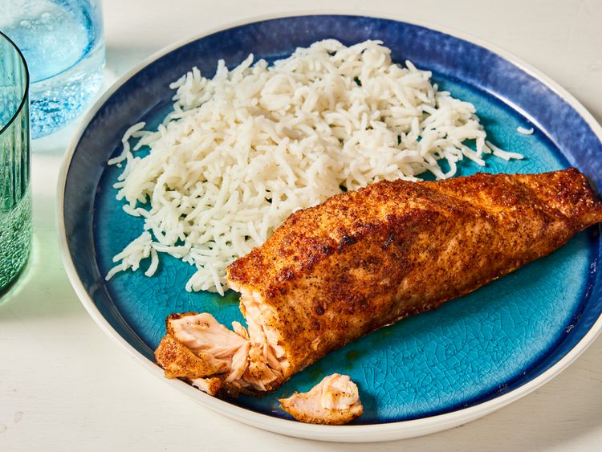

Back to home
Air-Fried Cajun Spiced Salmon

Serves 2
This air fryer salmon is full of flavor with a hint of sweetness. It's moist, delicious, and ready in under 10 minutes. If using an unsalted Cajun seasoning, you may want to season the fillets with salt before serving. I like to use a Misto sprayer with oil, but feel free to use regular cooking spray. For best results, use 1-inch-thick, center-cut fillets.
Ingredients:
- Cooking spray
- 1 tablespoon Cajun seasoning
- 1 teaspoon brown sugar
- 2 skin-on salmon fillets
Directions:
- Gather all ingredients. Preheat the air fryer to 390 degrees F (200 degrees C).
- Rinse and dry salmon fillets with a paper towel. Mist fillets with cooking spray.
- Mix together Cajun seasoning and brown sugar in a small bowl until combined; spread onto a plate.
- Press fillets, flesh-side down, into seasoning mixture.
- Spray the basket of the air fryer with cooking spray and place salmon fillets skin-side down. Mist salmon again lightly with cooking spray.
- Close the lid and cook in the preheated air fryer for 8 minutes. Remove from the air fryer and let rest for 2 minutes before serving.
Back to home